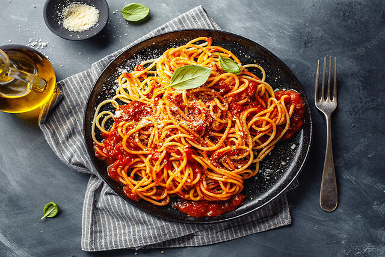
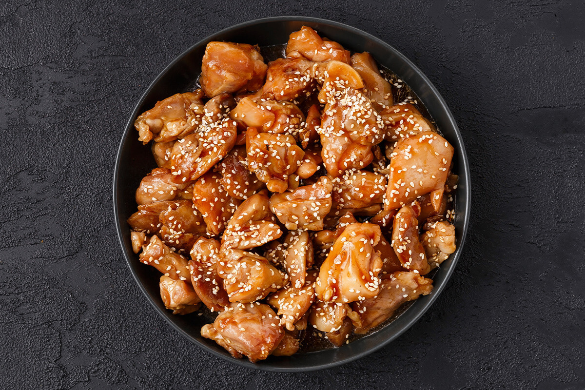
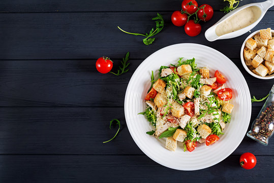
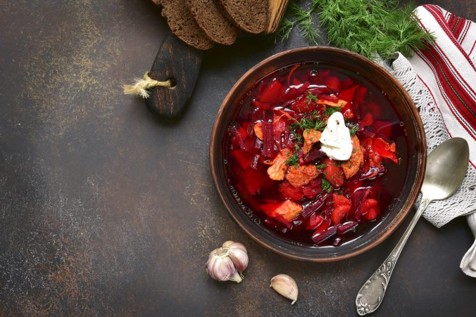
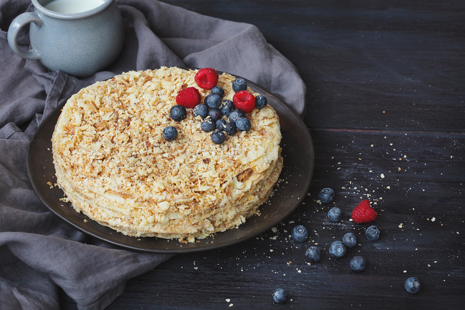
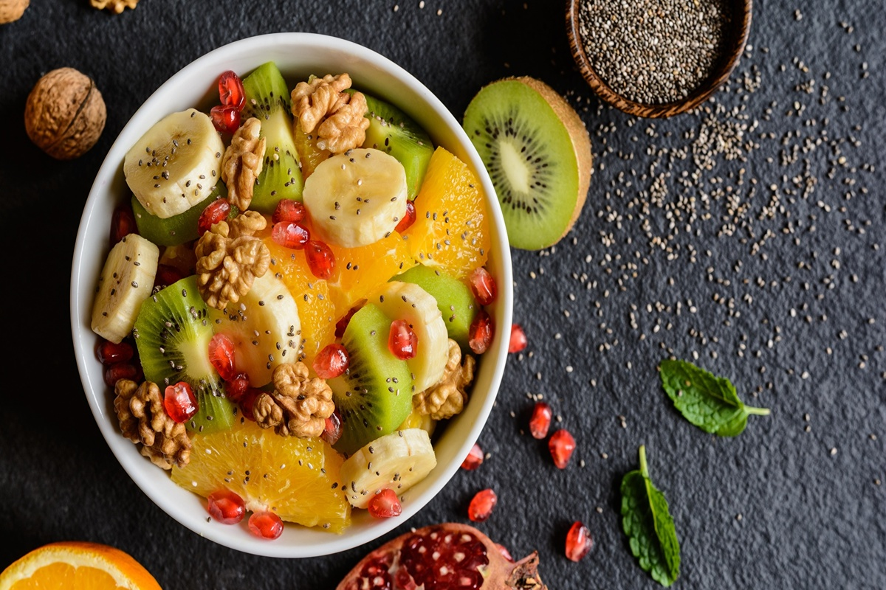

Популярные рецепты

Паста с томатным соусом
Нежная паста с насыщенным томатным соусом.

Курица Терияки
Японское блюдо с нежным соусом терияки.

Цезарь салат
Свежий салат с курицей и пармезаном.

Борщ
Классический свекольный суп с мясом.

Торт Наполеон
Классический торт со слоеным тестом и кремом.

Фруктовый салат
Свежий салат из сезонных фруктов.